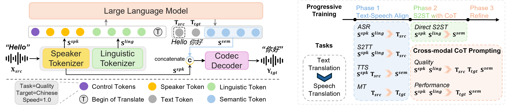

UniSS:
Unified Expressive Speech-to-Speech Translation with Your Voice
UniSS is a unified single-stage S2ST framework that achieves high translation fidelity and speech quality, while preserving timbre, emotion, and duration consistency.
Contents
Overview of UniSS (S2ST)

Figure 1. UniSS integrates pre-trained text LLMs and transfers their translation capabilities to the speech domain. UniSS outperforms both end-to-end S2ST systems and cascaded systems on translation fidelity, expressiveness preservation, duration consistency and speech quality
Method Overview

Figure 2. Overview of UniSS architecture, cross-modal CoT prompting and 3-phase progressive training.
Zero-shot S2ST Samples
| Language | Prompt | Translation |
|---|